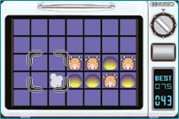
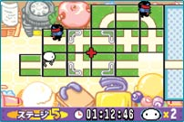
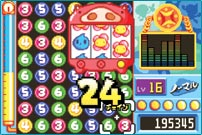
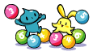

| 『ののの』ってなんですか？ と言いたくなるような面白いタイトルの今作。パッケージもトンカツだし、謎でいっぱいの『のののパズル ちゃいリアン』ですが、基本は『の』の字を描くように、パネルを回転させていくことで進むパズルゲームです。ちっちゃいエイリアン、通称『ちゃいリアン』たちのシュールかつ脱力系かわいさと相まって不思議な世界を展開しますが、どっこい内容は本格的なパズルゲームの登場です。 |
|
| まず最初に感じたのは、「これは本格的パズルだ」ということ。ゲームモードによって難易度や目的が違うのですが、それでも出尽くした感のあるパズルゲームカテゴリにおいて、新しさを感じさる内容です。基本はABボタンのみを使った"回転"オンリーなのですが、モードによって印象が違うので、ここでモード別に解説を。 |
◆くるくるレンジ
まずは腕試し。ここでゲームのチュートリアルを兼ねた遊びができます。パネルを回転させる方法や、目的に沿った動かし方などに慣れていくには絶好のモード。画面上の『穴』にブタを落とすと、チーン♪ といい音がして、おいしいごはんができあがる…というモードです。難易度とできるメニューはどんどんグレードアップしていくので、遊んでいるとおなかが空いてくるのが難でしょうか…。完成するメニューがあまりにもリアルすぎます。 |
◆くるくるウォーク
ちゃいリアンが無事に目的地へ到達できるよう、パネルを回転させて道を作ってあげるモード。ズレていたり、離れていたりするパネルを、早く正しい道へと完成させるべし。これも慣れなので、右回転・左回転などのコツを掴めば問題ないモードです。が、途中で色々なアイテムが登場するので、瞬時に判断して利用することが要求されます。『くるくるレンジ』で回転方向に対する慣れを徹底してからやるといいかも。 |
◆くるパチ６
基本は３〜６までの数字合わせ。上方向からブロックが降ってきて、どんどん積まれていきます。『３』なら『３』のブロックを３つ並べると『４』に変化、今度は『４』を４つ並べると『５』に変化…と、最高『６』まで展開するので、『６』を６つ以上並べてガンガン消していくべし。慣れてくると、もはや思考すら使う必要がなくなって脊髄反射的な技で消せるようになります。
このなかにも更に４つの遊び方があるのですが、個人的にはスコアアタックがオススメ。自由な遊び方ができるし、練習的にも使えるのが楽しい。腕が上がってきたら、友達同士で熱い『たいせん』を。中毒的な魅力にとりつかれること間違いなし！
|
というわけで、とにかくぜひ手に取って遊んでみて。パズルはやってみると気付かぬうちにハマってしまうのが特徴ですが、これもその例外ではありません。開発スタッフみずからハマってしまったという、その魔力的魅力を体験して下さいね！
なお、ホームページではスコアランキングもやっています。腕に覚えのある人は、ぜひとも登録してみて！！ |

|